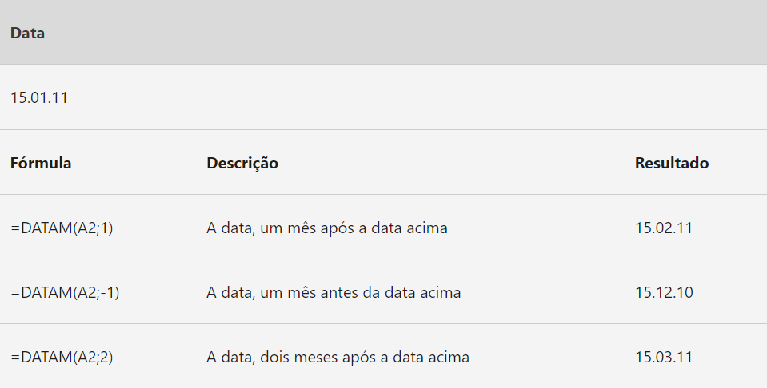
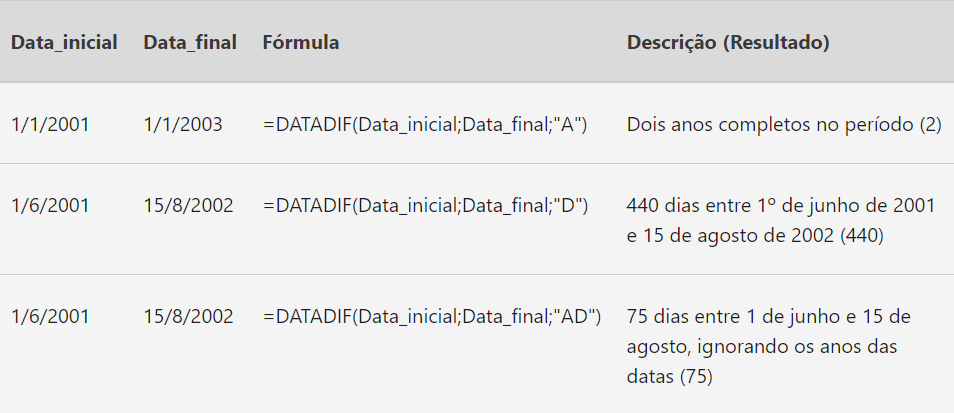

Data e Hora
Função HOJE
A função HOJE é útil quando você precisa ter a data atual exibida em uma planilha, independentemente de quando a pasta de trabalho for aberta. Ela também é útil para o cálculo de intervalos. Por exemplo, se você souber que alguém nasceu em 1963, poderá usar a seguinte fórmula para descobrir a idade dessa pessoa a partir do aniversário deste ano:
= ANO(HOJE())-1963
Essa fórmula usa a função HOJE como argumento da função ANO de forma a obter o ano atual e, em seguida, subtrai 1963, retornando a idade da pessoa.
Dicas:
Função DATAM
Retorna um número de série de data que é o número de meses indicado antes ou depois de data_inicial. Use DATAM para calcular datas de liquidação ou datas de vencimento que caem no mesmo dia do mês da data de emissão.
Imagem criada por Microsoft Suporte (online):
Dicas:
- Clique aqui para acessar documentação.
Função DATADIF
Calcula o número de dias, meses ou anos entre duas datas.
Imagem criada por Microsoft Suporte (online):
Dicas:
- Clique aqui para acessar documentação.